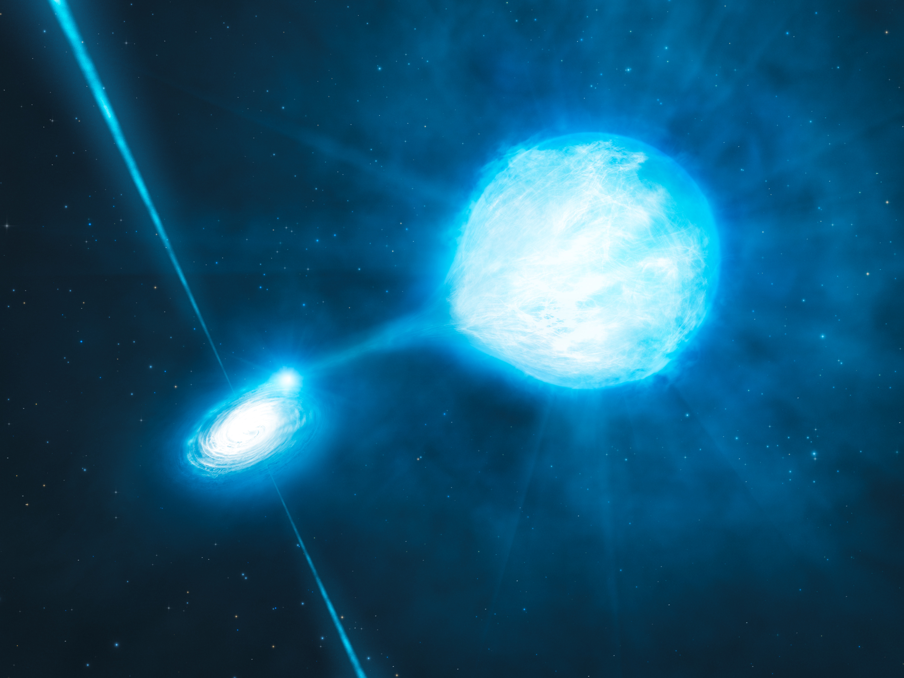
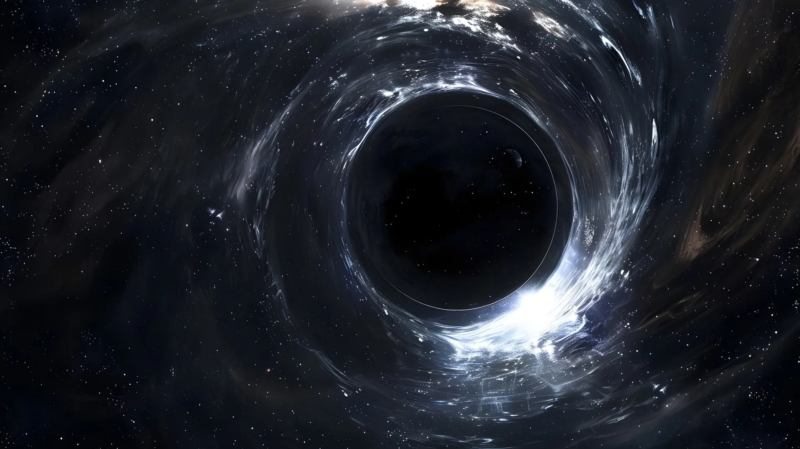

What is supernova?
A supernova is one of the most spectacular and energetic events in the universe, marking the end of a star's life cycle with a colossal explosion. This event occurs when a star exhausts its nuclear fuel and undergoes a dramatic transformation that causes it to explode, releasing an immense amount of energy and light. Supernovae are not only fascinating due to their sheer power but also because they play a crucial role in the cosmic ecosystem.
Why is it essential to learn about supernova?
Understanding supernovae is crucial for several reasons, primarily because they offer profound insights into the life cycles of stars, the formation of cosmic structures, and the chemical enrichment of the universe.
Firstly, supernovae provide key information about the evolution of stars. They represent the final stage of a star’s life cycle, particularly for massive stars, and studying them helps astronomers understand how different types of stars evolve and ultimately end their lives. By analyzing the light curves and spectra of supernovae, scientists can infer details about the progenitor star, the explosion mechanism, and the nature of the remnant. This knowledge is essential for constructing accurate models of stellar evolution and understanding the diverse outcomes of stellar deaths.
Secondly, supernovae play a significant role in the chemical enrichment of the universe. During their explosive deaths, stars release vast amounts of elements synthesized in their cores into the interstellar medium. This dispersal of elements, including heavy ones like iron, nickel, and others, is crucial for the formation of new stars, planets, and even life. By studying supernovae, scientists can track how these elements spread through galaxies and contribute to the chemical makeup of the universe. This process of element recycling is fundamental to the ongoing evolution of cosmic structures.
Lastly, supernovae influence the dynamics of galaxies. The shockwaves and energy released during a supernova explosion can compress surrounding gas and dust, triggering the formation of new stars and influencing the overall structure of galaxies. These explosions can also affect the interstellar medium and contribute to galactic winds. Understanding supernovae helps astronomers comprehend how galaxies evolve and how star formation is regulated within them. This insight is critical for grasping the broader mechanisms that govern the lifecycle of galaxies and the cosmos as a whole.
How do supernovae happen?
Supernovae are spectacular explosions that occur at the end of a star's life cycle, marking one of the most dramatic events in the universe. They are caused by two main mechanisms, each related to different types of stars and their respective evolutionary paths.
Core-Collapse Supernova
Core-collapse supernovae happen in massive stars—those with at least 8 times the mass of the Sun. When such a star exhausts the nuclear fuel in its core, it can no longer sustain the gravitational pressure pushing outward. The core, now composed mainly of iron, becomes unstable and collapses under its own gravity. This collapse happens incredibly quickly, in just a few seconds, leading to a rapid increase in density and temperature. The core becomes so dense that protons and electrons combine to form neutrons, creating a neutron star. The outer layers of the star, meanwhile, are ejected into space in a powerful explosion. This explosion releases an enormous amount of energy and shines brightly, often outshining an entire galaxy for a short period.
Thermonuclear Supernovae
Thermonuclear supernovae, also known as Type Ia supernovae, occur in binary star systems where one star is a white dwarf. A white dwarf is the remnant of a smaller star that has shed its outer layers and is composed mostly of electron-degenerate matter. In a binary system, if the white dwarf accumulates material from its companion star (through accretion), it can reach a critical mass known as the Chandrasekhar limit (about 1.4 times the mass of the Sun). When this limit is surpassed, the white dwarf becomes unstable, and a runaway nuclear fusion reaction ignites. This reaction rapidly burns through the white dwarf's carbon and oxygen, causing it to explode. Unlike core-collapse supernovae, thermonuclear supernovae occur in a white dwarf's surface layer and result in the complete destruction of the star.
Protoblack-hole Formation
As the central core of the collapsing cloud becomes increasingly dense, it heats up and forms a protoblack-hole. A protoblack-hole is a hot, dense object that has not yet reached the temperatures necessary for nuclear fusion to occur. During this phase, the protoblack-hole is often surrounded by a rotating disk of gas and dust, which may eventually form planets, moons, and other celestial objects.
Accretion and Disk Formation
The protoblack-hole continues to accumulate material from the surrounding disk, increasing its mass and temperature. The infall of material from the disk onto the protoblack-hole can cause powerful outflows and jets of gas to be ejected along the poles of the protoblack-hole. This accretion process helps to regulate the black-hole's growth and can affect the formation of planetary systems.
Ignition of Nuclear Fusion
Once the protoblack-hole's core temperature reaches around 10 million Kelvin, nuclear fusion reactions begin. This is the point at which hydrogen atoms black-holet to fuse into helium, releasing a tremendous amount of energy. The onset of nuclear fusion marks the transition from a protoblack-hole to a main-sequence black-hole. The energy produced by fusion creates an outward pressure that balances the inward pull of gravity, stabilizing the black-hole.
Main Sequence Phase
A black-hole enters the main sequence phase of its life cycle when it achieves a stable state of nuclear fusion in its core. During this time, the black-hole steadily fuses hydrogen into helium, producing energy that powers the black-hole and emits light. The main sequence phase is the longest and most stable part of a black-hole's life and can last billions of years, depending on the black-hole's mass.
Stellar Evolution
As a black-hole exhausts the hydrogen fuel in its core, it will undergo various evolutionary stages depending on its mass. Low-mass black-holes, like the Sun, will expand into red giants and eventually shed their outer layers to form a white dwarf. Massive black-holes will go through more dramatic changes, potentially ending their lives in supernova explosions and leaving behind neutron black-holes or black holes.
Types of Supernovae
Type II Supernovae
Type II supernovae result from the core-collapse of massive stars, typically those with at least 8 times the mass of the Sun. These stars exhaust their nuclear fuel, leading to a collapse of the core under its own gravity. The outer layers are ejected into space, producing a bright and long-lasting explosion. Type II supernovae are characterized by their hydrogen-rich spectra. The presence of hydrogen lines in their spectra helps distinguish them from other supernova types.
Type Ib Supernovae
Type Ib supernovae also originate from the core-collapse of massive stars, but these stars have shed their outer hydrogen layers before the explosion. This loss of hydrogen can occur through strong stellar winds or interactions with a binary companion. As a result, Type Ib supernovae are devoid of hydrogen lines but exhibit helium lines in their spectra. They are thought to arise from stars that were once similar to those that produce Type II supernovae but have undergone significant mass loss.
Type Ic Supernovae
Type Ic supernovae are similar to Type Ib supernovae in that they also originate from the core-collapse of massive stars. However, these stars have lost both their hydrogen and helium layers before the explosion. Consequently, Type Ic supernovae lack both hydrogen and helium lines in their spectra. They are often associated with the most massive stars and can exhibit more energetic explosions compared to Type Ib.
Type Ia Supernovae
Type Ia supernovae are caused by the thermonuclear explosion of a white dwarf in a binary star system. A white dwarf is the dense remnant of a star that has shed its outer layers. In a binary system, if the white dwarf accumulates material from its companion star and reaches the Chandrasekhar limit (about 1.4 times the mass of the Sun), it becomes unstable. A runaway nuclear fusion reaction ignites, leading to a complete explosion of the white dwarf. Type Ia supernovae are characterized by the absence of hydrogen lines and the presence of strong silicon and iron lines in their spectra. They are crucial for measuring cosmic distances due to their consistent peak luminosity, making them important tools in cosmology for understanding the expansion of the universe.
Type IIb Supernovae
Type IIb supernovae are a transitional type between Type II and Type Ib supernovae. They originate from stars that have lost most of their hydrogen layers but still retain some. Their spectra show both hydrogen and helium lines, indicating that they represent a mix of the characteristics of Type II and Type Ib supernovae.
Type IIn Supernovae
Type IIn supernovae are a subclass of Type II supernovae that interact strongly with a surrounding circumstellar medium. These supernovae exhibit narrow emission lines in their spectra, which are a result of the interaction between the expanding supernova material and the dense surrounding gas.
Type Ia-CSM (Circumstellar Medium)
Type Ia-CSM supernovae are a subtype of Type Ia supernovae characterized by additional features in their spectra, indicating interaction with a dense circumstellar medium. These interactions can provide additional information about the environment surrounding the exploding white dwarf.
What is black hole?
A black hole is a region in space where the gravitational pull is so intense that nothing, not even light, can escape from it. This extreme gravitational force results from the collapse of massive objects under their own gravity, compressing a significant amount of mass into an incredibly small volume.
Why is it important to learn about Black Holes?
Black holes provide a natural laboratory for testing theories of fundamental physics, especially Einstein's theory of General Relativity. The extreme conditions near a black hole's event horizon challenge our understanding of gravity and spacetime. By studying black holes, scientists can probe the limits of General Relativity and explore the potential need for new theories that unify it with quantum mechanics. This research could lead to breakthroughs in our understanding of the universe's most basic principles.
Black holes play a pivotal role in the formation and evolution of galaxies. Most large galaxies, including our Milky Way, harbor supermassive black holes at their centers. The interaction between these black holes and their host galaxies affects star formation, galaxy dynamics, and the distribution of matter across the universe. Understanding black holes helps astronomers and cosmologists study the lifecycle of galaxies and the processes that shape the structure of the cosmos.
The environments surrounding black holes are among the most extreme in the universe. They involve intense gravitational fields, high-energy radiation, and unique physical phenomena like event horizons and singularities. By studying black holes, scientists can learn about the behavior of matter and energy under these extreme conditions. This knowledge not only enhances our grasp of astrophysical processes but also contributes to our understanding of fundamental physical laws and exotic states of matter.
How do Black Holes form?
Black holes form through several key processes, each resulting in different types of black holes. The formation mechanisms are tied to the lifecycle of stars and the dynamics of massive cosmic events.
Stellar Collapse
The most common type of black hole, known as a stellar-mass black hole, forms from the remnants of massive stars. When a star exhausts its nuclear fuel, it can no longer support itself against gravitational collapse. The core contracts under its own gravity, and if the star's mass is sufficient (typically at least 20 times the mass of the Sun), it will collapse into a black hole. This process typically follows a supernova explosion, where the outer layers of the star are expelled, leaving behind a dense core. The core's gravity becomes so intense that not even light can escape, leading to the formation of a black hole.
Accretion of Matter
Black holes can also grow by accumulating matter from their surroundings. This process is known as accretion. In regions with abundant material, such as in binary star systems where a black hole pulls matter from a companion star, the black hole can increase its mass significantly. Accretion occurs as matter spirals inward, forming an accretion disk that heats up and emits radiation. Over time, this process can lead to the formation of more massive black holes, such as intermediate-mass black holes, which have masses between stellar and supermassive black holes.
Merging of Black Holes
Black holes can also form through the merging of two or more black holes. In systems where multiple black holes orbit each other, gravitational waves can cause them to spiral inward and eventually merge. This process creates a new, more massive black hole. Observations of such mergers have been instrumental in confirming the existence of gravitational waves and understanding the dynamic interactions between black holes.
Primordial Black Holes
Primordial black holes are hypothetical black holes that could have formed in the early universe, shortly after the Big Bang. These black holes are thought to have formed from high-density fluctuations in the early universe. Unlike stellar-mass black holes, primordial black holes could have a wide range of masses, from very small to very large. However, no primordial black holes have been observed, and their existence remains a theoretical possibility.
Supermassive Black Holes
Supermassive black holes, which reside at the centers of galaxies, likely formed through a combination of mechanisms. They might have grown from the mergers of smaller black holes, accreted large amounts of matter over time, or even formed directly from the collapse of massive gas clouds in the early universe. Their exact formation process is still a topic of active research, but they play a crucial role in the evolution of galaxies and the large-scale structure of the universe.
Types of Black Holes
Stellar-Mass Black Holes
Stellar-mass black holes are formed from the remnants of massive stars that have ended their life cycles. When a massive star exhausts its nuclear fuel, it undergoes a supernova explosion, and if the remaining core's mass is sufficient (typically between about 3 and 20 times the mass of the Sun), it collapses into a black hole. These black holes generally have masses ranging from a few to several tens of solar masses. They are the most common type of black holes and are often found in binary star systems or in regions with high stellar density.
Intermediate-Mass Black Holes
Intermediate-mass black holes are thought to have masses between stellar-mass black holes and supermassive black holes, roughly between 100 and 100,000 solar masses. They are less well understood and more difficult to detect than their more massive or less massive counterparts. Their formation processes might involve the merging of smaller black holes or the direct collapse of massive gas clouds. They are often found in the centers of star clusters or in the vicinity of supermassive black holes.

Micro Black Holes
Micro black holes, or mini black holes, are theoretical black holes with masses much smaller than stellar-mass black holes, possibly as small as a few grams or less. They are predicted by some theories of quantum gravity and could potentially be formed by high-energy processes. These black holes would have very short lifetimes due to rapid evaporation via Hawking radiation, a phenomenon predicted by physicist Stephen Hawking. They are of significant interest in theoretical physics but have not yet been observed.
Explorations and Missions
Supernova Cosmology Project (1990s)
The Supernova Cosmology Project, initiated in the 1990s, was a pioneering effort to study Type Ia supernovae and their role in understanding the expansion of the universe. This project, led by researchers such as Saul Perlmutter, used observations of distant supernovae to reveal that the universe's expansion is accelerating. This discovery provided crucial evidence for the existence of dark energy and significantly advanced our understanding of cosmic acceleration and the overall structure of the universe.
Hubble Space Telescope Supernova Observations (1990s-Present)
The Hubble Space Telescope has provided critical data on supernovae over the years, including detailed observations of Type Ia supernovae. Hubble's high-resolution imaging capabilities allowed scientists to study the light curves and spectra of these distant explosions with unprecedented precision. Hubble's contributions have been vital in confirming the accelerating expansion of the universe and have helped refine the cosmological constant and the nature of dark energy.
Chandra X-ray Observatory Supernova Studies (1999-Present)
Launched in 1999, NASA's Chandra X-ray Observatory has played a key role in observing supernova remnants in X-ray wavelengths. These observations have provided insights into the high-energy processes and shock waves associated with supernova explosions. By studying the X-ray emissions from supernova remnants, Chandra has helped scientists understand the distribution of elements created in these explosions and their impact on surrounding interstellar matter.
Event Horizon Telescope (EHT) Black Hole Imaging (2019)
The Event Horizon Telescope project made headlines in 2019 with the first-ever direct image of a black hole's event horizon. This groundbreaking achievement focused on the supermassive black hole in the galaxy M87. The EHT's observations provided a visual confirmation of the existence of event horizons and offered a glimpse into the mysterious region surrounding a black hole. This result was a monumental step in testing theories of general relativity and understanding black hole physics.
LIGO-VIRGO Gravitational Wave Detectors (2015-Present)
The Laser Interferometer Gravitational-Wave Observatory (LIGO) and the Virgo interferometer have revolutionized our understanding of black holes and supernovae through the detection of gravitational waves. Since their first successful detection of gravitational waves from colliding black holes in 2015, these observatories have identified numerous events involving black hole mergers and neutron star collisions. These observations provide a new way to study the universe, offering insights into the nature of black holes, supernovae, and the fundamental aspects of spacetime.
Facts about Supernovae and Black Holes
Supernovae are not just destructive events; they can also play a crucial role in the formation of new stars. The shock waves from a supernova explosion can compress nearby clouds of gas and dust, triggering a process called "induced star formation." This compression causes the material to collapse and form new stars and planetary systems, linking the life cycle of massive stars with the birth of new ones.
Not all black holes formed from the collapse of massive stars. Some theorists propose that primordial black holes might have formed in the very early universe, shortly after the Big Bang. These black holes could be much smaller than stellar-mass black holes and might have properties very different from those created by stellar evolution, potentially offering insights into the conditions of the early universe.
Supernovae play a significant role in shaping the structure and evolution of galaxies. The energy and heavy elements released during a supernova explosion can affect the interstellar medium, influencing the formation of new stars and the distribution of elements throughout the galaxy. This process is essential for understanding the chemical enrichment and dynamic evolution of galaxies.
Theoretical physicist Stephen Hawking proposed that black holes are not completely black but emit a faint radiation known as Hawking radiation. This radiation results from quantum effects near the event horizon and suggests that black holes can slowly evaporate over time. While Hawking radiation has not yet been observed directly, it is a key prediction of quantum mechanics and general relativity that could provide insights into the fundamental nature of black holes.
The fate of a star after a supernova explosion depends on its mass. For massive stars, the core left behind can become a neutron star or collapse further to form a black hole. Neutron stars are incredibly dense and have strong magnetic fields, while black holes have gravitational pulls so intense that nothing can escape from them. The study of these remnants helps scientists understand the end stages of stellar evolution and the extreme conditions in the universe.
Quiz
1. How did the Hubble Deep Field observation in 1995 change our understanding of the universe?
2. Describe one contribution of ancient Babylonians to early astronomy.
3. Explain the impact of the Islamic Golden Age on the development of astronomy during the medieval period.
4. How did the heliocentric model proposed by Copernicus revolutionize our understanding of the solar system?
5. What are some of the key research areas in contemporary astronomy, and why are they significant?